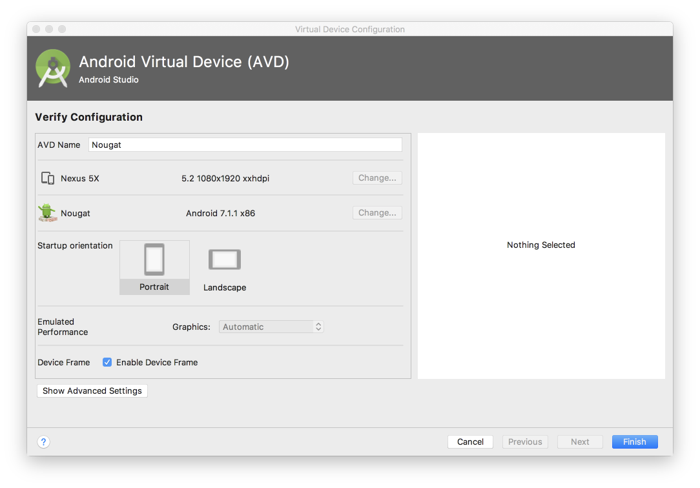
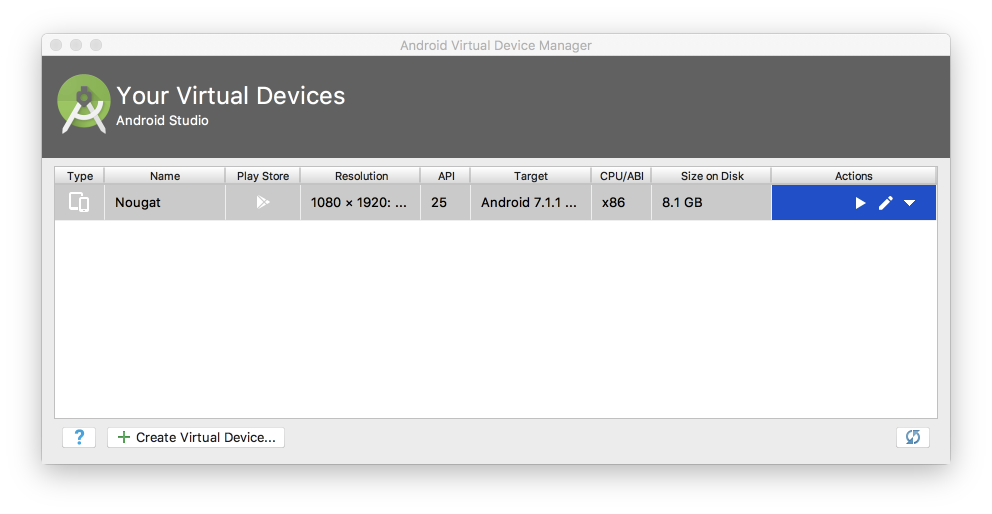

Objectives
Download and configure Android Studio. Generate and run a sample application.
Setup
Download and install the latest Android Studio (3.2 when this lab was updated last).
Indentation Levels
Run Android Studio, and before creating an application, we can. make some adjustments to the indentation styles. These options are available in the Adnroid->Preferences option.
We will be looking to change the following settings available in Preferences->Editor->Core Style->Kotlin:
- change the code settings to use tab size = 2, indent = 2 and continuation indent = 4 for Kotlin:

Do the same for XML, Groovy, Java and JSON.
New Project
Create an new Android project with the following key characteristics:
- Kotlin
- Single 'Blank' activity
Follow the structure and parameters outlined here:


Your project should look like this:

Run
Make sure you can build and run the project. When you first attempt to run the app, you will be asked to create a Virtual Machine. You might create a VM configured like this:

Which will appear in a list of VMs like this:

The version, size and resolution are a reasonable compromise.
If it launches successfully, if should look like this in the VM:

.gitignore
If you are using git, you might want to make the following small adjustments to the generated .gitignore file:
*.iml
.gradle
/local.properties
/.idea
.DS_Store
/build
/captures
.externalNativeBuild(we are excluding all .idea files)
If you are using git, it is a good idea to commit the project to a repository now.
Key Project Files & Resources
Although the project structure looks daunting, there are only a small number of source files to work with regularly:
Find each of these files now (there are presented here without filenames)
package org.wit.placemark
import android.support.v7.app.AppCompatActivity
import android.os.Bundle
class PlacemarkActivity : AppCompatActivity() {
override fun onCreate(savedInstanceState: Bundle?) {
super.onCreate(savedInstanceState)
setContentView(R.layout.activity_placemark)
}
}<?xml version="1.0" encoding="utf-8"?>
<manifest xmlns:android="http://schemas.android.com/apk/res/android"
package="org.wit.placemark">
<application
android:allowBackup="true"
android:icon="@mipmap/ic_launcher"
android:label="@string/app_name"
android:roundIcon="@mipmap/ic_launcher_round"
android:supportsRtl="true"
android:theme="@style/AppTheme">
<activity android:name=".PlacemarkActivity">
<intent-filter>
<action android:name="android.intent.action.MAIN"/>
<category android:name="android.intent.category.LAUNCHER"/>
</intent-filter>
</activity>
</application>
</manifest>apply plugin: 'com.android.application'
apply plugin: 'kotlin-android'
apply plugin: 'kotlin-android-extensions'
android {
compileSdkVersion 28
defaultConfig {
applicationId "org.wit.placemark"
minSdkVersion 23
targetSdkVersion 28
versionCode 1
versionName "1.0"
testInstrumentationRunner "android.support.test.runner.AndroidJUnitRunner"
}
buildTypes {
release {
minifyEnabled false
proguardFiles getDefaultProguardFile('proguard-android.txt'), 'proguard-rules.pro'
}
}
}
dependencies {
implementation fileTree(dir: 'libs', include: ['*.jar'])
implementation "org.jetbrains.kotlin:kotlin-stdlib-jdk7:$kotlin_version"
implementation 'com.android.support:appcompat-v7:28.0.0'
implementation 'com.android.support.constraint:constraint-layout:1.1.3'
testImplementation 'junit:junit:4.12'
androidTestImplementation 'com.android.support.test:runner:1.0.2'
androidTestImplementation 'com.android.support.test.espresso:espresso-core:3.0.2'
}<?xml version="1.0" encoding="utf-8"?>
<android.support.constraint.ConstraintLayout
xmlns:android="http://schemas.android.com/apk/res/android"
xmlns:app="http://schemas.android.com/apk/res-auto"
xmlns:tools="http://schemas.android.com/tools"
android:layout_width="match_parent"
android:layout_height="match_parent"
tools:context="org.wit.placemark.PlacemarkActivity">
<TextView
android:layout_width="wrap_content"
android:layout_height="wrap_content"
android:text="Hello World!"
app:layout_constraintBottom_toBottomOf="parent"
app:layout_constraintLeft_toLeftOf="parent"
app:layout_constraintRight_toRightOf="parent"
app:layout_constraintTop_toTopOf="parent"/>
</android.support.constraint.ConstraintLayout><resources>
<string name="app_name">Placemark</string>
</resources><resources>
<!-- Base application theme. -->
<style name="AppTheme" parent="Theme.AppCompat.Light.DarkActionBar">
<!-- Customize your theme here. -->
<item name="colorPrimary">@color/colorPrimary</item>
<item name="colorPrimaryDark">@color/colorPrimaryDark</item>
<item name="colorAccent">@color/colorAccent</item>
</style>
</resources>The files are (in order of appearence)
- app/src/main/java/org/wit/placemark/PlacemarkActivity.kt
- app/src/main/AndroidManifest.xml
- app/build.gradle
- app/src/main/res/layout/activity_placemark.xml
- app/src/main/res/values/strings.xml
- app/src/main/res/values/styles.xml
Locate all of these files in the Android Studio 'Android' perspective:
and in the 'Project' perspective:

and using Finder/Explorer:

As you gain experience in android - the role and purpose of each of these files will become clearer.
Logging Event Handling in Kotlin
We are going to be working exclusively in Kotlin - not Java. This affords considerable improvements, largely around conciseness and expressiveness of code.
Logging
To prepare for this, include this additional dependency in our gradle.build:
gradle.build
implementation 'org.jetbrains.anko:anko-commons:0.10.7'Your dependencies section will look like this now:
dependencies {
implementation fileTree(dir: 'libs', include: ['*.jar'])
implementation "org.jetbrains.kotlin:kotlin-stdlib-jdk7:$kotlin_version"
implementation 'com.android.support:appcompat-v7:28.0.0'
implementation 'com.android.support.constraint:constraint-layout:1.1.3'
implementation 'org.jetbrains.anko:anko-commons:0.10.7'
testImplementation 'junit:junit:4.12'
androidTestImplementation 'com.android.support.test:runner:1.0.2'
androidTestImplementation 'com.android.support.test.espresso:espresso-core:3.0.2'
}This library is documented here:
We will be progressively introducing some of its features as we evolve the application.
The first feature is a simple way of logging:
Change the class to include the 'AnkoLogger' feature:
PlacemarkActivity
..
class PlacemarkActivity : AppCompatActivity(), AnkoLogger {
...When you make this change, AnkoLogger will not be recognised - so you will need to import it. This can be triggered automatically (if you can figure this out). The correct import statement is:
import org.jetbrains.anko.AnkoLoggerThen, in our onCreate() method, try it out:
...
info("Placemark Activity started..")
...Again, this will require an import - which will be this:
import org.jetbrains.anko.infoTry to figure out the key strokes required to generate this...
Now, make sure you can run the app and see this log in the 'Logcat' view in Studio:

Do not proceed further until you can locate something like the above in Logcat. The logss are a bit noisy, and may contain what look like errors. However, buried in there should be your message.
This style of logging is discussed here:
Solution
Placemark application so far:
Exercise 1:
Learn how to :
- terminate the currently executing version of the app on the emulator
- completely remove the application from the emulator, and install it again
Exercise 2:
If you have am android phone, plug it in and see if you can execute the application on the device. It should just be a matter of plugging it into your workstation - and it should appear as another device alongside the emulator device.
Exercise 3:
Download, extract and run the archive/sample solution above.